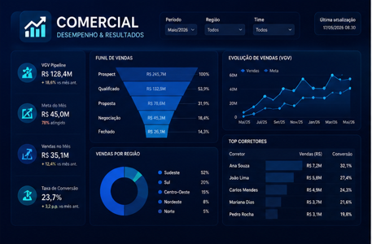
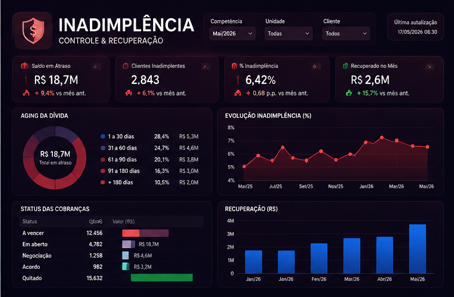
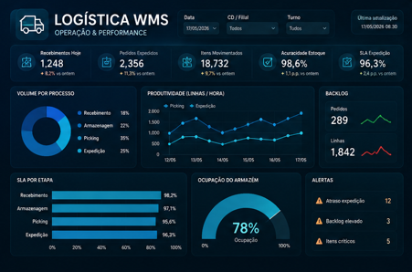
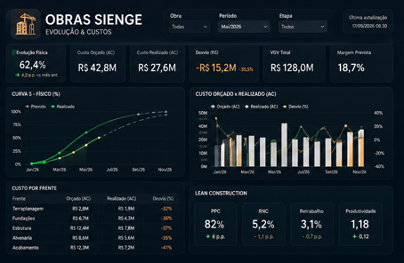

Custos, riscos, produtividade, crescimento e retorno sobre os sistemas contratados.
Consultoria executiva em processos, sistemas e dados
Eu conecto a operação à tecnologia. E a tecnologia ao resultado.
Ajudo empresas a organizar processos, utilizar melhor seus sistemas, transformar dados em decisões e reduzir atividades manuais — conectando estratégia, operação, tecnologia e pessoas.
A rotina praticada pelos usuários, não apenas o fluxo descrito em documentos.
Indicadores com fonte, regra, responsável, meta e ação recomendada.
Governança, treinamento, comunicação e melhoria da experiência dos usuários.
O problema que chega à diretoria
Crescimento sem integração vira complexidade.
O problema raramente está em uma única ferramenta. Ele aparece na ruptura entre áreas, processos, sistemas, dados e pessoas.
01
Sistemas demais, utilização de menos
Custo invisível
Licenças, módulos e plataformas sem clareza de valor ou com funções sobrepostas.
02
Processos importantes fora do sistema
Risco operacional
Planilhas paralelas, aprovações informais, lançamentos repetidos e baixa rastreabilidade.
03
Dados que não sustentam decisões
Decisão frágil
Cadastros inconsistentes, relatórios manuais e indicadores sem regra única.
04
Usuários sobrecarregados e pouco engajados
Baixa adoção
Treinamentos informais, excesso de etapas, dificuldade de uso e resistência à mudança.
05
Demandas, acessos e fornecedores sem governança
Perda de controle
Prioridades conflitantes, mudanças sem controle e investimentos sem visão de portfólio.
Como gero valor
Uma atuação integrada, da operação à decisão.
Eu não começo pelo software. Começo entendendo como a empresa funciona, onde perde valor e quais decisões precisa tomar.
Pilar 01
Processos & operação
Mapeamento AS IS / TO BE, gargalos, responsabilidades, aprovações, riscos, controles e oportunidades de simplificação.
Pilar 02
Sistemas & governança
Inventário, custos, licenças, módulos, acessos, fornecedores, integrações, demandas, testes, homologação e mudanças.
Pilar 03
Dados & indicadores
Qualidade dos dados, dicionário de indicadores, modelagem, consolidação de bases, Power BI e painéis gerenciais.
Pilar 04
Automação & inteligência artificial
Priorização de tarefas repetitivas, APIs, RPA, alertas, assistentes internos e IA aplicada com validação humana.
Pilar 05
Pessoas & adoção
Jornada do usuário, treinamento, documentação, trilhas, Universidade Corporativa e acompanhamento da adoção.
Pilar 06
Gestão executiva de valor
Roadmap, prioridades, business case, custos, riscos, benefícios e comunicação objetiva com gestores e direção.
Metodologia própria
Método CONECTA.
Uma metodologia executiva para compreender a empresa, estruturar a transformação e garantir que a mudança seja incorporada à rotina.
CONECTA
Estratégia, processo, sistema, dado e usuário tratados como partes de uma mesma operação — com implantação em ondas e acompanhamento de benefícios.
Direção, objetivos, dores, riscos e decisões críticas.
Rotina, usuários, planilhas, aprovações e desvios.
Cadastros, fontes, papéis, padrões e critérios.
TO BE, prioridades, riscos, custos e benefícios.
Configuração, integração, teste, homologação e entrega.
Capacitação, materiais, suporte e gestão da mudança.
Indicadores, adoção, benefícios e melhoria contínua.
Mercados de maior aderência
Conhecimento de sistema com leitura de operação.
A especialização setorial permite compreender processos, riscos e indicadores com mais profundidade.
Construção & incorporação
Da necessidade de compra à medição da obra.
Governança e integração entre engenharia, planejamento, orçamento, suprimentos, contratos, financeiro e campo.
- Sienge, Prevision, Mobuss e sistemas complementares
- Compras, contratos, medições, custos e aprovações
- Lean Construction, indicadores e treinamento
Logística & armazenagem
Da portaria ao faturamento e à expedição.
Leitura ponta a ponta do fluxo operacional para reduzir riscos de implantação e aumentar a confiabilidade do WMS.
- WMS Senior e integração com ERP
- Recebimento, estoque, separação e expedição
- SLA, produtividade, ocupação e inventário
Serviços & áreas corporativas
Processos administrativos com menos esforço manual.
Organização de demandas, dados, indicadores, aprovações, contratos, documentos e conhecimento interno.
- Financeiro, compras, comercial e controladoria
- Power BI, automações, integrações e portais
- Governança, políticas e Universidade Corporativa
Trajetória profissional
Experiência entre operação, sistemas e gestão.
Uma carreira construída na resolução de problemas reais, com atuação junto a usuários, gestores, fornecedores e direção.
2025 — Atual
01
Grupo MNGT
Gestão de Sistemas | ERP | WMS | BI | PMO
Governança e evolução do ecossistema corporativo de sistemas das empresas do grupo, conectando construção civil, logística, armazenagem e áreas administrativas.
Gestão de Sienge, Sankhya, WMS Senior, Prevision e plataformas complementares
Mapeamento de processos, requisitos, testes e homologação
Governança de acessos, aprovações, fornecedores e demandas
Indicadores, treinamento e integração entre áreas
2023 — Atual
02
Projetos independentes & consultoria
Dados, processos, indicadores e soluções empresariais
Desenvolvimento de diagnósticos, painéis, análises financeiras, automações e soluções digitais voltadas à gestão e à tomada de decisão.
Power BI para fluxo de caixa, viabilidade, comercial e engenharia
Modelagem de dados, SQL, Python e APIs
Portais corporativos, manuais e trilhas de aprendizagem
Tradução de necessidades do negócio em soluções técnicas
2022 — 2025
03
Vilaurbe — Construtora e Incorporadora
Data Analytics & melhoria de processos
Atuação em dados, integrações, automações e indicadores para diferentes áreas da empresa, apoiando operação e diretoria.
Dashboards executivos e operacionais
Integração entre ERP, CRM, APIs e bases internas
Automação de rotinas e tratamento de dados
Indicadores para engenharia, comercial, financeiro e gestão
Experiências representativas
Capacidade aplicada em ambientes empresariais reais.
Cases apresentados de forma executiva e sem exposição de informações confidenciais. Métricas quantitativas devem ser publicadas somente após validação formal.
Construção civil & incorporação
Governança de ERP, aprovações e integração da operação.
Contexto
Ambiente com diferentes departamentos, obras, contratos, medições, compras, regras de aprovação e múltiplos sistemas.
Atuação
Estrutura organizacional, matriz de aprovações, governança de acessos, procedimentos, treinamento e integração entre ERP, planejamento e campo.
Valor gerado
Maior clareza de responsabilidades, rastreabilidade, padronização e base mais confiável para gestão.
Entregáveis: políticas, fluxos, matriz RACI, alçadas, treinamento e indicadores de adoção.
Logística & armazenagem
Preparação operacional e validação ponta a ponta de WMS.
Contexto
Operação com portaria, recebimento, conferência, endereçamento, separação, carregamento, expedição e faturamento.
Atuação
Mapeamento do processo real, cenários de teste, requisitos, cadastros, divergências, checklists e indicadores operacionais.
Valor gerado
Redução do risco de implantação, visão integrada da operação e critérios objetivos para homologação.
Entregáveis: processo AS IS / TO BE, roteiro de testes, matriz de pendências e painel operacional.
Gestão do conhecimento
Universidade Corporativa para sistemas e processos.
Contexto
Conhecimento concentrado em poucas pessoas, treinamentos informais e dificuldade de integração de novos colaboradores.
Atuação
Portal centralizado, trilhas por sistema e processo, vídeos, manuais, BPMN, políticas, checklists e assistente interna.
Valor gerado
Preservação do conhecimento, autonomia dos usuários, padronização e menor dependência de treinamentos individuais.
Entregáveis: portal, trilhas, procedimentos, biblioteca de processos e indicadores de conclusão.
Dados & gestão executiva
Indicadores conectados à decisão, não apenas à visualização.
Contexto
Dados dispersos, relatórios manuais, pouca rastreabilidade e demora para responder perguntas gerenciais.
Atuação
Dicionário de indicadores, regras de cálculo, tratamento de dados, painéis executivos e operacionais, metas e responsáveis.
Valor gerado
Maior consistência das informações, acompanhamento de desvios e comunicação gerencial mais objetiva.
Entregáveis: modelo de dados, dicionário de KPIs, dashboards e rotina de acompanhamento.
Portfólio de soluções
Projetos que demonstram capacidade técnica e visão de negócio.
Demonstrações, painéis e soluções organizados pelo problema empresarial que ajudam a resolver.
Sistemas & governança

PMO
PMO de Sistemas & ERP
Governança de projetos sistêmicos, processos, requisitos, usuários-chave, testes, implantação e sustentação.
Financeiro & gestão

CAIXA
Dashboard Fluxo de Caixa
Visão diária e projetada do caixa, entradas, saídas, saldos, compromissos e necessidade de capital.
Controladoria imobiliária

VGV
Viabilidade Financeira
VGV, custos, RET, lucro, margem e fluxo de caixa para análise executiva de empreendimentos.
Gestão comercial

CRM
Inteligência Comercial
Pipeline, funil, forecast, metas, conversão, performance e leitura gerencial da operação comercial.
Crédito & cobrança

AGING
Gestão de Inadimplência
Aging, carteira, acordos, cobrança, risco de crédito e recuperação financeira.
Operação logística

WMS
Inteligência Logística WMS
Recebimento, ocupação, inventário, produtividade, picking, expedição, SLA e backlog.
Engenharia & obras

OBRAS
Gestão de Obras & Sienge
Evolução física, curva S, orçamento, custo realizado, medições, PPC e indicadores de engenharia.
Diferencie publicamente “case implantado”, “demonstração técnica” e “projeto conceitual”. Essa transparência aumenta a confiança de diretores e evita que uma demonstração seja interpretada como resultado comprovado de cliente.
Formatos de contratação
Comece pelo nível de transformação que a empresa precisa.
Escopos modulares, com objetivos, entregáveis, responsáveis, cronograma e critérios de sucesso.
Diagnóstico Executivo
Levantamento estruturado para identificar prioridades, riscos, custos e oportunidades.
- Entrevistas com direção, gestores e usuários-chave
- Inventário de sistemas, módulos, licenças e custos
- Mapeamento dos processos críticos
- Matriz de gargalos, riscos e quick wins
- Relatório executivo e plano priorizado
Indicado para: empresas que sabem que precisam mudar, mas ainda não possuem clareza sobre onde começar.
Programa de Melhoria
Diagnóstico, desenho e implantação das melhorias priorizadas em processos, sistemas e dados.
- Processos AS IS / TO BE e matriz RACI
- Otimização e governança de sistemas
- Indicadores, dados e painéis gerenciais
- Automações, integrações e provas de conceito
- Treinamentos, documentação e gestão da mudança
Indicado para: empresas que precisam transformar um processo, área ou operação com execução acompanhada.
PMO de Sistemas Fracionado
Liderança especializada sob demanda, sem a necessidade de ampliar imediatamente a estrutura fixa.
- Gestão de demandas, fornecedores e prioridades
- Custos, contratos, licenças e portfólio
- Roadmap de sistemas, dados e automações
- Acompanhamento de indicadores e adoção
- Ritual executivo periódico com a direção
Indicado para: empresas com vários sistemas e projetos, mas sem uma governança dedicada.
Entregáveis executivos
Dores, riscos, causas, oportunidades, prioridades e recomendações.
BPMN, SIPOC, responsáveis, aprovações, controles e exceções.
Módulos, custos, integrações, sobreposições, riscos e oportunidades.
Ações rápidas, curto, médio e longo prazo com benefícios e dependências.
Fórmula, fonte, responsável, periodicidade, meta e ação recomendada.
Tempo, risco, tecnologia, ganho esperado e necessidade de validação humana.
Acessos, mudanças, demandas, testes, homologação e fornecedores.
Trilhas, vídeos, manuais, fluxos, checklists e acompanhamento.
GF
Gustavo Farias
Consultor de Transformação Operacional, Sistemas e Dados.
Atuo como ligação entre direção, operação, usuários, fornecedores e tecnologia para transformar sistemas corporativos em capacidade de gestão.
Diferencial profissional
Traduzo a necessidade do negócio em uma solução aplicável.
Sistemas corporativos
Sienge, Prevision, Sankhya, WMS Senior, Omie, Mobuss, OnSafety, SoftExpert e ecossistemas integrados.
Dados & tecnologia
Power BI, SQL, Python, APIs, automações, modelagem, integração, análise de dados e portais web.
Processos
Construção civil, logística, armazenagem, compras, contratos, medições, estoque, faturamento, financeiro e áreas administrativas.
Gestão
Requisitos, fornecedores, custos, projetos, testes, homologação, governança, documentação, treinamento e melhoria contínua.
Comunicação
Capacidade de conversar com usuários operacionais e direção, conectando detalhes da rotina a decisões estratégicas.
Diagnóstico de maturidade
Mais do que tecnologia.
A avaliação mede a capacidade da empresa de operar, controlar, aprender e decidir de forma integrada.
A pontuação real é construída por entrevistas, evidências, dados e observação da operação.
Processos
Fluxos, papéis e controles
Sistemas
Uso, aderência e integração
Dados
Qualidade, regras e acesso
Governança
Decisão, risco e responsabilidade
Experiência
Facilidade, treinamento e adoção
Automação & IA
Potencial, segurança e valor
As barras são apenas uma representação visual das dimensões avaliadas; não constituem diagnóstico real de uma empresa específica.
Próximo passo
Antes de comprar outra ferramenta, entenda onde sua operação perde valor.
Uma conversa executiva pode revelar se o problema está no processo, no sistema, nos dados, na governança ou na experiência dos usuários.
Gustavo Farias · São Carlos/SP · Atendimento presencial e remoto